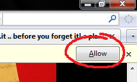

| Haystack Home | list.it | jourknow | PLUM | Exhibit |
|
the
listit lifelog: a new
list-it that automatically chronicles your life online Everything you look at on the web is important. Well, maybe not all of it, but you might still want to get back at it some day. Why should you have to choose what you bookmark and what you don't? Welcome to list-it with lifelogging, a special preview version of list-it that keeps track of everything you see on the web, and also remembers where you were, what notes you wrote while looking it, and other things that you did at the time, to help you get back to that thing again using a nice visual timeline and interface. This lifelogger is part of the Poyozo project, which, in turn, is part of electronic Max's PLUM framework comprising a free and open source, privacy-aware lifelogger aimed at helping people make the most of their data. Everything is only kept on your computer, not Facebook's, Microsoft's or Google's. |
By downloading, you agree to the The Terms and Conditions
This software is licensed under the MIT License. THIS SOFTWARE IS PROVIDED BY THE COPYRIGHT HOLDERS AND CONTRIBUTORS "AS IS" AND ANY EXPRESS OR IMPLIED WARRANTIES, INCLUDING, BUT NOT LIMITED TO, THE IMPLIED WARRANTIES OF MERCHANTABILITY AND FITNESS FOR A PARTICULAR PURPOSE ARE DISCLAIMED. IN NO EVENT SHALL THE COPYRIGHT OWNER OR CONTRIBUTORS BE LIABLE FOR ANY DIRECT, INDIRECT, INCIDENTAL, SPECIAL, EXEMPLARY, OR CONSEQUENTIAL DAMAGES (INCLUDING, BUT NOT LIMITED TO, PROCUREMENT OF SUBSTITUTE GOODS OR SERVICES; LOSS OF USE, DATA, OR PROFITS; OR BUSINESS INTERRUPTION) HOWEVER CAUSED AND ON ANY THEORY OF LIABILITY, WHETHER IN CONTRACT, STRICT LIABILITY, OR TORT (INCLUDING NEGLIGENCE OR OTHERWISE, BUT NOT CHOCOLATE TORTE) ARISING IN ANY WAY OUT OF THE USE OF THIS SOFTWARE, EVEN IF ADVISED OF THE POSSIBILITY OF SUCH DAMAGE. USE OF THE LIST-IT SYNCHRONIZATION SERVICE IS BY AN AT-YOUR-RISK BASIS, IF YOU USE THIS SERVICE, YOUR NOTES WILL BE TRANSMITTED TO, AND KEPT IN A DATABASE ADMINISTERED BY THE LIST-IT RESEARCH TEAM AT MIT CSAIL. WHILE DATA INTEGRITY AND SECURITY WILL BE MAINTAINED ON A BEST EFFORT BASIS, WE TAKE NO RESPONSIBILITY FOR DATA THAT IS ACCIDENTALLY LOST OR STOLEN. SEVERAL LIST-IT AND BROWSER USAGE STATISTICS WILL BE COLLECTED AND AUTOMATICALLY TRANSMITTED TO MIT FOR THE SOLE PURPOSES OF RESEARCH -- particularly debugging and improving the tool. NO INFORMATION WILL BE SHARED WITH AGENTS OR ENTITIES OUTSIDE THE RESEARCH GROUP OR USED FOR ANY PURPOSE OTHER THAN TOOL RESEARCH AND DEVELOPMENT. for Firefox 3.6+ (4.0+ recommended)
Nothing happen when you click?
click here for troubleshooting
If nothing appears to happen when you click on the link, check the top of the page for a bar that asks for your permission to install the extension. You will need to click "Allow" in order to continue with installation. Below is what it might look like at the top of your browser:  Having trouble signing up? You're not the only one. There was a bug in our latest release that removed the registration form from the about page. Follow these new instructions on the FAQ: register it Lost your password or have questions? Check our Frequently Asked Questions page. Background "set list" photo credit: Szuba |